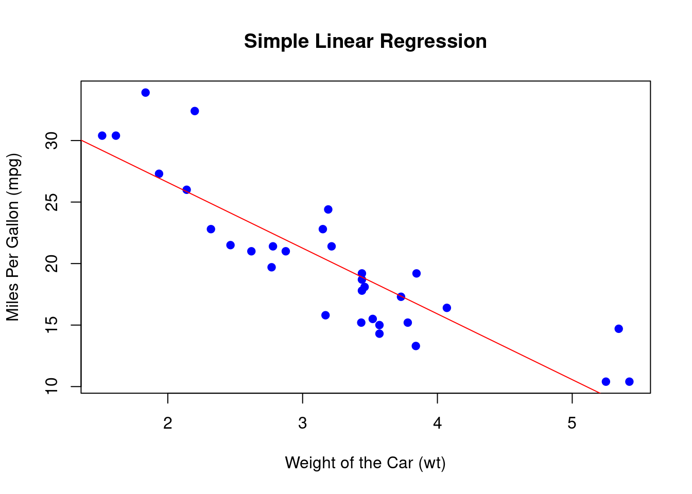

Chapter 5 Simple Linear Regression
Welcome to the world of Simple Linear Regression! 🎉 This statistical technique is super handy when you want to explore the relationship between two continuous variables. Essentially, it helps us predict the value of one variable based on the value of another.
For example, imagine you want to predict a student’s exam score based on the number of hours they studied. Here, the hours studied are the independent variable (or predictor), and the exam score is the dependent variable (or response).
What is Simple Linear Regression?
In simple linear regression, we fit a straight line (called the regression line) through the data points. This line is defined by the equation:
\[y = mx + b\]
Where:
- \(y\) is the predicted value (dependent variable).
- \(m\) is the slope of the line (how much \(y\) changes for a unit change in \(x\)).
- \(x\) is the independent variable.
- \(b\) is the y-intercept (the value of \(y\) when \(x\) is 0).
Let’s use the built-in mtcars data set in R to demonstrate how to perform simple linear regression.
Load the data set
## mpg cyl disp hp drat wt qsec vs am gear carb
## Mazda RX4 21.0 6 160 110 3.90 2.620 16.46 0 1 4 4
## Mazda RX4 Wag 21.0 6 160 110 3.90 2.875 17.02 0 1 4 4
## Datsun 710 22.8 4 108 93 3.85 2.320 18.61 1 1 4 1
## Hornet 4 Drive 21.4 6 258 110 3.08 3.215 19.44 1 0 3 1
## Hornet Sportabout 18.7 8 360 175 3.15 3.440 17.02 0 0 3 2
## Valiant 18.1 6 225 105 2.76 3.460 20.22 1 0 3 1Fit the simple linear regression model that will predict mpg (miles per gallon) based on wt (the weight of the car).
- Get the model summary to get important information about the model we just fitted.
##
## Call:
## lm(formula = mpg ~ wt, data = mtcars)
##
## Residuals:
## Min 1Q Median 3Q Max
## -4.5432 -2.3647 -0.1252 1.4096 6.8727
##
## Coefficients:
## Estimate Std. Error t value Pr(>|t|)
## (Intercept) 37.2851 1.8776 19.858 < 2e-16 ***
## wt -5.3445 0.5591 -9.559 1.29e-10 ***
## ---
## Signif. codes: 0 '***' 0.001 '**' 0.01 '*' 0.05 '.' 0.1 ' ' 1
##
## Residual standard error: 3.046 on 30 degrees of freedom
## Multiple R-squared: 0.7528, Adjusted R-squared: 0.7446
## F-statistic: 91.38 on 1 and 30 DF, p-value: 1.294e-10- Plot the data and regression line to understand the relationship
# Plot the data points
plot(mtcars$wt, mtcars$mpg, main = "Simple Linear Regression",
xlab = "Weight of the Car (wt)", ylab = "Miles Per Gallon (mpg)",
pch = 19, col = "blue")
# Add the regression line
abline(model, col = "red")
Predictions can be made based on the data. Lets predict the mpg for car that weighs 3.5 tons
# Predict mpg for a car that weighs 3.5 tons
new_data <- data.frame(wt = 3.5)
predicted_mpg <- predict(model, new_data)
print(paste("Predicted MPG for a car weighing 3.5 tons:", round(predicted_mpg, 2)))## [1] "Predicted MPG for a car weighing 3.5 tons: 18.58"